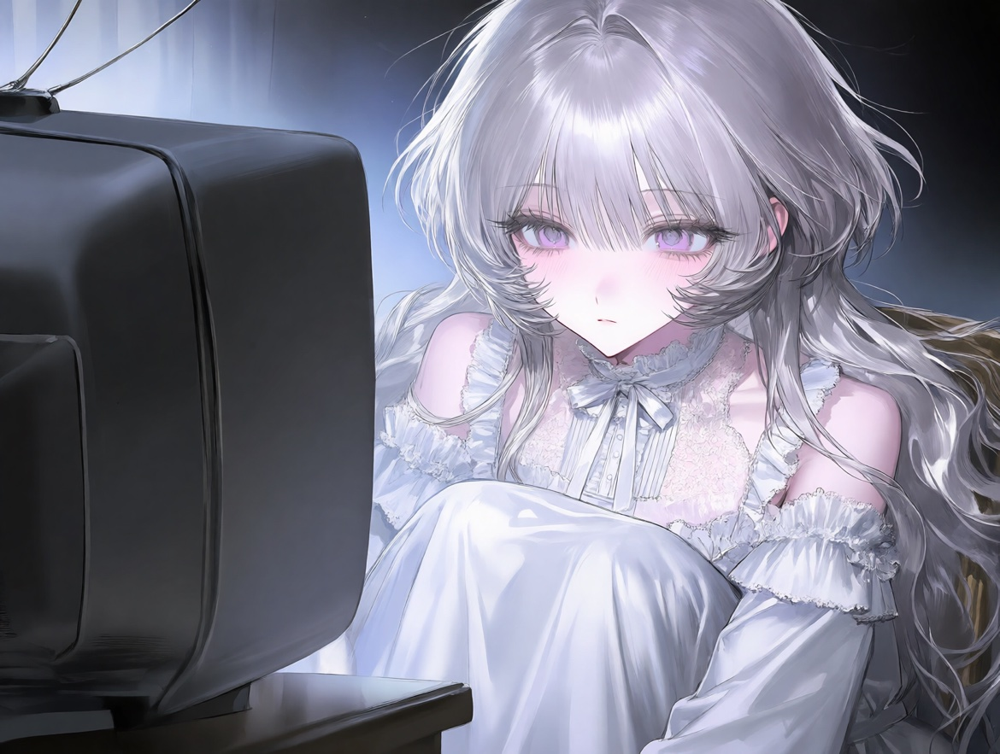

A RUINED ARCHIVE
FRAGMENT
残像の欠片
はじめに
WARNING — 先に本編の記録「CHARACTER ARCHIVE — AFTERIMAGE」を読むことを強く推奨する。
ここには、説明がない。問いは書かれていない。答えも、書かれていない。
『存在した証は、残像として残り続ける。』 この場所は、双子の姉妹の記録を守っていた。姉はアルマ、妹はノエル。 双子は「生成」された存在だった。世界の象徴である蝶の力を、二人で分け合って生まれた。 力は一人分。それを二人で分け合う。それが、すべての始まりだった。
A PHOTOGRAPH — 記録写真

SPECIMENS — 標本タグ
#A6D923
#B8CDEB
A LETTER — 黒塗りの手紙
ずっと、言えなかったことがある。 あなたの蝶が透明になっていくのを、私は隣で見ていた。 ごめんね、と、すき、のあいだで、3年が過ぎた。 ——アルマ
記録庫THE VAULT